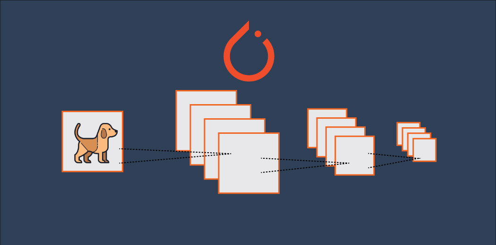

This is a simulation of an Airway Reservation app, demonstrating the skills in user interface design, backend simulation, using Java within the Android Studio environment.

This project involves image classification utilizing Deep Learning, the code is written in PyTorch, a popular deep learning framework, to implement a Convolutional Neural Network (CNN) classifier for image classification.
The Accounting Record Management System is used for maintaining transactions, developed utilizing a hashed file structure. It features an intuitive graphical interface created with Tkinter, ensuring user-friendliness.
The practical application of data structures in the development of a simplified email management system, akin to Gmail. The project was implemented using C++ and aimed to demonstrate the effective utilization of data structures in managing user accounts, messages, and various associated actions.